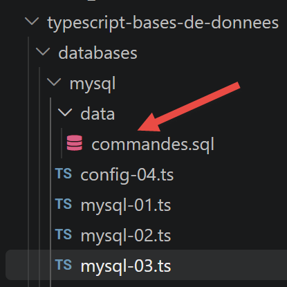

7. Database Access

The following chapters round out the course by covering database access from TypeScript scripts, drawing inspiration from the chapters “Using SGBD MySQL” and “Using ORM SQLALCHEMY” in the course “Introduction to Python 3 and the Flask Framework” (2019). Three approaches are presented in succession: direct access to the SGBD using the native mysql2 driver, followed by two ORM (object-relational mapping) approaches—TypeORM and Prisma.
7.1. Direct Access to the Database
Two SQL scripts, provided with this chapter, allow you to create the test databases: dbpersonnes (a single table, used in the chapter on the native driver) and dbecole (four interconnected tables, used in the two chapters on ORM).

7.1.1. Preparing the [dbpersonnes] database
The dbpersonnes database contains only one table, personnes, which uses the same schema as the one used in the Python course (columns id, first\_name, last\_name, age, with a uniqueness constraint on the pair (last\_name, first\_name)). The SQL script /create_dbpersonnes.sql below creates the database, the application user, and the table, then inserts five arbitrary people into it:
| -- create_dbpersonnes.sql
-- Recreates the [dbpersonnes] database used in the section “Accessing MySQL with the
-- native driver [mysql2],” with arbitrary data (the original data from the
--Python/Flask 2020 course are no longer available).
--
-- Usage:
-- mysql -u root -p < create_dbpersonnes.sql
--
-- Creates the database and the application user [admpersonnes/nobody] (same
-- credentials as the original course) and the table [personnes].
DROP DATABASE IF EXISTS dbpersonnes;
CREATE DATABASE dbpersonnes CHARACTER SET utf8mb4 COLLATE utf8mb4_unicode_ci;
CREATE USER IF NOT EXISTS 'admpersonnes'@'localhost' IDENTIFIED BY 'nobody';
GRANT ALL PRIVILEGES ON dbpersonnes.* TO 'admpersonnes'@'localhost';
FLUSH PRIVILEGES;
USE dbpersonnes;
CREATE TABLE personnes (
id INT PRIMARY KEY,
prenom VARCHAR(30) NOT NULL,
nom VARCHAR(30) NOT NULL,
age INTEGER NOT NULL,
UNIQUE (nom, prenom)
);
-- arbitrary data (same people as in the examples from the original course)
INSERT INTO personnes (id, prenom, nom, age) VALUES
(1, 'Paul', 'Langevin', 48),
(2, 'Sylvie', 'Lefur', 70),
(3, 'Pierre', 'Nicazou', 35),
(4, 'Geraldine','Colou', 26),
(5, 'Paulette', 'Girond', 56);
|
To create this database (MySQL), you can use the [HeidiSQL] tool from Laragon. We’ve already used it.
- In [1], start all Laragon services. This will start SGBD and MySQL;
- in [2], access the [HeidiSQL] database management tool;
- In [1-2], log in to MySQL;
Using [1-2], run the two SQL files in the project one after the other:
While still in [HeidiSQL], run F5 to refresh the display:
We are now ready to use these two databases.
7.1.2. script [mysql-01]
First look at the mysql2 driver (mysql2/promise module, which exposes a API based on Promises rather than callbacks): open a connection to dbpersonnes, then close it. This follows the same approach as the Python script [mysql_01] (Chapter 16).
| // databases/mysql/mysql-01.ts
// Step 1: Connect to the database MySQL [dbpersonnes], then
// log out. Use the Python script [mysql_01] from the Python/Flask course.
import mysql from 'mysql2/promise';
// Connection to the database MySQL [dbpersonnes]
// The user ID is (admpersonnes, nobody)
const USER = 'admpersonnes';
const PWD = 'nobody';
const HOST = 'localhost';
const DATABASE = 'dbpersonnes';
// Let's go
let connexion: mysql.Connection | undefined;
try {
console.log('Connexion au SGBD MySQL en cours...');
// Login
connexion = await mysql.createConnection({ host: HOST, user: USER, password: PWD, database: DATABASE });
// tracking
console.log(
`Connexion MySQL réussie à la base database=${DATABASE}, host=${HOST} sous l'identité user=${USER}, passwd=${PWD}`,
);
} catch (erreur) {
// displaying the error
console.log(`L'erreur suivante s'est produite : ${erreur}`);
} finally {
// Close the connection if it was opened
if (connexion) {
await connexion.end();
}
}
|
Let’s comment on this code:
- line 16: [mysql.createConnection({ host: HOST, user: USER, password: PWD, database: DATABASE })] — opens a single, asynchronous connection — createConnection returns a Promise<Connection>, hence the
await; this is the TypeScript equivalent of mysql.connector.connect(...) on the Python side;
- line 29: [connexion.end()] — gracefully closes the connection in the
finally block, regardless of whether an error occurred — the connection is declared outside the try block (type mysql.Connection | undefined) to remain accessible at this level.
Let’s run this script:
npx tsx databases/mysql/mysql-01.ts
Execution result:
| Connexion au SGBD MySQL en cours...
Connexion MySQL réussie à la base database=dbpersonnes, host=localhost sous l'identité user=admpersonnes, passwd=nobody
|
7.1.3. script [mysql-02]
This time, the connection is encapsulated in a reusable function connexion(host, database, login, pwd), which is called first with valid credentials and then a second time with invalid credentials to observe the error returned by the driver. The Python script is named **[mysql\_02]**.
| // databases/mysql/mysql-02.ts
// In this new script, the database connection is encapsulated in a function.
// Contains the Python script [mysql_02].
import mysql from 'mysql2/promise';
// connects and then disconnects (login, password) from the database [database] on the server [host]
// raises an exception if there is a problem
async function connexion(host: string, database: string, login: string, pwd: string): Promise<void> {
let cnx: mysql.Connection | undefined;
try {
// connection
cnx = await mysql.createConnection({ host, user: login, password: pwd, database });
console.log(
`Connexion réussie à la base database=${database}, host=${host} sous l'identité user=${login}, passwd=${pwd}`,
);
} finally {
// Closes the connection if it has been opened
if (cnx) {
await cnx.end();
console.log('Déconnexion réussie\n');
}
}
}
// ---------------------------------------------- main
// connection credentials
const USER = 'admpersonnes';
const PASSWD = 'nobody';
const HOST = 'localhost';
const DATABASE = 'dbpersonnes';
// Login for an existing user
try {
await connexion(HOST, DATABASE, USER, PASSWD);
} catch (erreur) {
// the error is displayed
console.log(String(erreur));
}
// Login by a nonexistent user
try {
await connexion(HOST, DATABASE, 'xx', 'xx');
} catch (erreur) {
// error displayed
console.log(String(erreur));
}
|
Let’s comment on this code:
- line 9: [async function connexion(host, database, login, pwd): Promise<void>] — an async function that returns nothing but can raise an exception — it does not catch connection errors itself; instead, it lets them propagate to the caller;
- line 40: [await connexion(HOST, DATABASE, 'xx', 'xx')] — the second call, with a user “xx” who does not exist on the MySQL side, raises an exception that the enclosing
catch block displays.
Let’s run this script:
npx tsx databases/mysql/mysql-02.ts
Execution result:
| Connexion réussie à la base database=dbpersonnes, host=localhost sous l'identité user=admpersonnes, passwd=nobody
Déconnexion réussie
Error: Access denied for user 'xx'@'localhost' (using password: YES)
|
Version-specific issue: On a recent MySQL server (8.4 and later), this second call may produce a different message: "Error: Plugin 'mysql_native_password' is not loaded" instead of "Access denied for user 'xx'@'localhost'." The cause is unrelated to the script: to avoid revealing whether an account exists or not (anti-enumeration protection), MySQL simulates an authentication exchange when logging in with an unknown user—and this simulation is hardcoded to use the legacy plugin mysql_native_password, which has been disabled by default since MySQL 8.4. The principle demonstrated by this script (an exception thrown and intercepted on invalid credentials) remains intact; to restore the exact message displayed, add `mysql_native_password=ON` below `[mysqld]` in the server’s `my.ini` file, then restart the server.
7.1.4. script [mysql-03]
We know how to connect; we now issue a SQL command over the connection to (re)create the “people” table with a slightly different schema (without the “id” column, using a composite primary key). This is handled by the Python script [mysql_03].
| // databases/mysql/mysql-03.ts
// Now that we know how to connect, we issue commands SQL over the connection:
// We (re)create the table [personnes] in the database [dbpersonnes].
// Runs the Python script [mysql_03].
import mysql from 'mysql2/promise';
// Executes an update query on the connection
async function executeSql(connexion: mysql.Connection, requete: string): Promise<void> {
await connexion.query(requete);
}
// ---------------------------------------------- main
// connection credentials
const ID = 'admpersonnes';
const PWD = 'nobody';
const HOST = 'localhost';
const DATABASE = 'dbpersonnes';
// Let’s take it step by step
let connexion: mysql.Connection;
try {
// connection — mysql2 executes each query in its own transaction
// auto-commit by default (equivalent to AUTOCOMMIT=True on the Python side)
connexion = await mysql.createConnection({ host: HOST, user: ID, password: PWD, database: DATABASE });
} catch (erreur) {
console.log(`L'erreur suivante s'est produite : ${erreur}`);
process.exit(1);
}
// Delete the "people" table if it exists
// if it does not exist, an error will occur—this is ignored
try {
await executeSql(connexion, 'drop table personnes');
} catch {
// ignored
}
// Create the "people" table
const requete =
'create table people (id int PRIMARY KEY, first_name varchar(30) NOT NULL, last_name varchar(30) NOT NULL, ' +
'age integer NOT NULL, unique(nom,prenom))';
try {
await executeSql(connexion, requete);
console.log(`${requete} : requête réussie`);
} catch (erreur) {
console.log(`L'erreur suivante s'est produite : ${erreur}`);
} finally {
await connexion.end();
}
|
Let’s comment on this code:
- line 9: [await connexion.query(requete)] — connexion.query() directly executes a string SQL without parameters — we’ll see the safer, parameterized version using execute() in the script [mysql-05];
- Line 28: [await executeSql(connexion, 'drop table personnes')] — an attempt is made to delete the table within an empty try/catch block: if the table does not yet exist, the error MySQL is simply ignored.
Let’s run this script:
npx tsx databases/mysql/mysql-03.ts
Execution result:
| create table personnes (id int PRIMARY KEY, prenom varchar(30) NOT NULL, nom varchar(30) NOT NULL, age integer NOT NULL, unique(nom,prenom)) : requête réussie
|
7.1.5. A reusable module: [mysql-module.ts]
Before writing the main script [mysql-04], which executes an entire file of commands SQL, we factor the execution logic for a list of commands—with or without a transaction—into a module, along with the display of each command’s result (lines for a SELECT, or the number of modified lines for a INSERT/UPDATE/DELETE). The Python module is named [mysql_module].
| // databases/mysql/mysql-module.ts
// Reusable functions for executing a list (or file) of commands
// SQL on an open MySQL connection. Imports the Python module [mysql_module].
import type { Connection, FieldPacket, ResultSetHeader, RowDataPacket } from 'mysql2/promise';
import { readFile } from 'node:fs/promises';
// displays the result of a SQL command (result of a mysql2 query())
// - if there is an array [fields], it was a SELECT: the columns are displayed
// and then the rows;
// - otherwise, it was an update statement (INSERT/UPDATE/DELETE/DDL): we
// displays the number of modified rows (equivalent to curseur.rowcount).
function afficherInfos(rows: RowDataPacket[] | ResultSetHeader, fields: FieldPacket[] | undefined): void {
if (fields && fields.length > 0) {
// was a SELECT — "fields" describes the requested columns
const titres = fields.map((f) => f.name);
console.log(titres.join(', '));
console.log('*'.repeat(titres.join(', ').length));
for (const ligne of rows as RowDataPacket[]) {
console.log(titres.map((t) => ligne[t]));
}
console.log('*'.repeat(titres.join(', ').length));
} else {
// no columns specified — update order
const header = rows as ResultSetHeader;
console.log(`nombre de lignes modifiées : ${header.affectedRows}`);
}
}
// uses the open connection [connexion]
// executes the SQL commands contained in the list [sqlCommands] on this connection
// (one command per element; empty lines or lines beginning with # are ignored)
// - if "followed" is true, each execution of a SQL command is displayed
// indicating whether it succeeded or failed;
// - if stop=true, the function stops at the first error encountered; otherwise
// it executes all commands;
// - if avecTransaction=true, any error cancels all previously executed commands SQL
// that were previously executed (rollback); otherwise, each command is validated
// independently (default behavior of mysql2);
// the function returns an array [erreur1, erreur2, ...]
export async function executeListOfCommands(
connexion: Connection,
sqlCommands: string[],
suivi = false,
arret = true,
avecTransaction = true,
): Promise<string[]> {
const erreurs: string[] = [];
if (avecTransaction) {
await connexion.beginTransaction();
}
try {
for (const commandeBrute of sqlCommands) {
// leading and trailing whitespace is removed from the current command
const commande = commandeBrute.trim();
// Empty command or comment? Move on to the next one
if (commande === '' || commande[0] === '#') {
continue;
}
// Execute the current command
try {
const [rows, fields] = await connexion.query(commande);
// No error
if (suivi) {
console.log(`[${commande}] : Exécution réussie`);
}
afficherInfos(rows as RowDataPacket[], fields);
} catch (erreur) {
const msg = `${commande} : Erreur (${erreur})`;
erreurs.push(msg);
if (suivi) {
console.log(msg);
}
// Stop?
if (avecTransaction || arret) {
return erreurs;
}
}
}
return erreurs;
} finally {
// Confirm or cancel the transaction if it exists
if (avecTransaction) {
if (erreurs.length > 0) {
await connexion.rollback();
} else {
await connexion.commit();
}
}
}
}
// uses the open connection [connexion]
// executes the SQL commands contained in the file on this connection
// text file [sqlFilename] (one command per line)
export async function executeFileOfCommands(
connexion: Connection,
sqlFilename: string,
suivi = false,
arret = true,
avecTransaction = true,
): Promise<string[]> {
try {
const contenu = await readFile(sqlFilename, 'utf-8');
return await executeListOfCommands(connexion, contenu.split('\n'), suivi, arret, avecTransaction);
} catch (erreur) {
return [`Le fichier ${sqlFilename} n'a pu être exploité : ${erreur}`];
}
}
|
Let’s comment on this code:
- line 45: [if (avecTransaction) { await connexion.beginTransaction(); }] — mysql2 is in AUTOCOMMIT mode by default (each query is validated individually) — beginTransaction() explicitly switches the connection to transactional mode, just as connexion.start_transaction() would on the Python side;
- line 76: [if (avecTransaction || arret) { return erreurs; }] — in transactional mode, the first error immediately terminates the loop — continuing would be pointless since the entire transaction will be rolled back anyway;
- line 82: [if (erreurs.length > 0) { await connexion.rollback(); } else { await connexion.commit(); }] — global commit or rollback, depending on whether an error occurred or not — see, however, the pitfall noted in the [mysql-04] script below.
The script also uses a small configuration module, config-04.ts, which centralizes the path to the SQL command file and the login credentials:
// databases/mysql/config-04.ts
// [mysql-04] script configuration: path to the SQL command file and
// database connection credentials [dbpersonnes].
import { fileURLToPath } from 'node:url';
import { dirname, join } from 'node:path';
const scriptDir = dirname(fileURLToPath(import.meta.url));
export function configure() {
return {
// command file SQL
commandsFilename: join(scriptDir, 'data', 'commandes.sql'),
// database connection credentials
host: 'localhost',
database: 'dbpersonnes',
user: 'admpersonnes',
password: 'nobody',
};
}
Note: import.meta.url followed by fileURLToPath/dirname is the standard method, as defined in the ECMAScript module ("type": "module" in package.json), to retrieve the directory of the current file—the equivalent of the magic variable __dirname, which is available natively in CommonJS but not in ESM.
The script itself, data/commandes.sql, follows the format used in the Python course (one command per line; empty lines or lines beginning with # are ignored):

| # deletion of the table [personnes]
drop table personnes
# Create the "people" table
create table personnes (prenom varchar(30) not null, nom varchar(30) not null, age integer not null, primary key (nom,prenom))
# Inserting two people
insert into personnes(prenom, nom, age) values('Paul','Langevin',48)
insert into personnes(prenom, nom, age) values ('Sylvie','Lefur',70)
# displaying the table
select prenom, nom, age from personnes
# intentional error
xx
# Inserting three people
insert into personnes(prenom, nom, age) values ('Pierre','Nicazou',35)
insert into personnes(prenom, nom, age) values ('Geraldine','Colou',26)
insert into personnes(prenom, nom, age) values ('Paulette','Girond',56)
# displaying the table
select prenom, nom, age from personnes
# list of people sorted alphabetically by last name; for those with the same last name, sorted alphabetically by first name
select nom,prenom from personnes order by nom asc, prenom desc
# list of people whose age falls within the range [20,40], sorted in descending order by age
# then, for those of the same age, in alphabetical order by last name, and for those with the same last name, in alphabetical order by first name
select nom,prenom,age from personnes where age between 20 and 40 order by age desc, nom asc, prenom asc
# Addition of Ms. Bruneau
insert into personnes(prenom, nom, age) values('Josette','Bruneau',46)
# Update of her age
update personnes set age=47 where nom='Bruneau'
# list of people with the last name Bruneau
select nom,prenom,age from personnes where nom='Bruneau'
# Removal of Ms. Bruneau
delete from personnes where nom='Bruneau'
# list of people with the last name Bruneau
select nom,prenom,age from personnes where nom='Bruneau'
|
7.1.6. script [mysql-04]
The main script: it executes the file data/commandes.sql using the previous module, with or without a transaction depending on a command-line parameter. Contains the Python script [mysql_04].
| // databases/mysql/mysql-04.ts
// Main script: runs the batch file SQL [data/commandes.sql],
// with or without a transaction, depending on the command-line parameter.
// Contains the Python script [mysql_04].
// npx tsx databases/mysql/mysql-04.ts true (with transaction)
// npx tsx databases/mysql/mysql-04.ts false (without transaction)
import mysql from 'mysql2/promise';
import { configure } from './config-04.js';
import { executeFileOfCommands } from './mysql-module.js';
const config = configure();
// ---------------------------------------------- main
// checking the syntax of the call
const args = process.argv.slice(2);
let erreur = args.length !== 1;
let avecTransactionTexte = '';
if (!erreur) {
avecTransactionTexte = args[0].toLowerCase();
erreur = avecTransactionTexte !== 'true' && avecTransactionTexte !== 'false';
}
if (erreur) {
console.log('syntaxe : mysql-04.ts true / false');
process.exit(1);
}
// text calculation
const avecTransaction = avecTransactionTexte === 'true';
const texte = avecTransaction ? 'avec transaction' : 'sans transaction';
// screen logs
console.log('--------------------------------------------------------------------');
console.log(`Exécution du fichier SQL ${config.commandsFilename} ${texte}`);
console.log('--------------------------------------------------------------------');
// execution of commands SQL from the file
let connexion: mysql.Connection | undefined;
let erreurs: string[] = [];
try {
// Connecting to the database
connexion = await mysql.createConnection({
host: config.host,
user: config.user,
password: config.password,
database: config.database,
});
// Executing the command file SQL
erreurs = await executeFileOfCommands(connexion, config.commandsFilename, true, false, avecTransaction);
} catch (erreurFatale) {
console.log(`L'erreur fatale suivante s'est produite : ${erreurFatale}`);
process.exit(1);
} finally {
if (connexion) {
await connexion.end();
}
}
// displaying the number of errors
console.log('--------------------------------------------------------------------');
console.log('Exécution terminée');
console.log('--------------------------------------------------------------------');
console.log(`Il y a eu ${erreurs.length} erreur(s)`);
for (const erreurCourante of erreurs) {
console.log(erreurCourante);
}
|
Let’s run it first without a transaction:
npx tsx databases/mysql/mysql-04.ts false
Execution result:
| --------------------------------------------------------------------
Exécution du fichier SQL .../databases/mysql/data/commandes.sql sans transaction
--------------------------------------------------------------------
[drop table personnes] : Exécution réussie
nombre de lignes modifiées : 0
[create table personnes (...)] : Exécution réussie
nombre de lignes modifiées : 0
[insert into personnes(prenom, nom, age) values('Paul','Langevin',48)] : Exécution réussie
nombre de lignes modifiées : 1
[insert into personnes(prenom, nom, age) values ('Sylvie','Lefur',70)] : Exécution réussie
nombre de lignes modifiées : 1
[select prenom, nom, age from personnes] : Exécution réussie
prenom, nom, age
****************
[ 'Paul', 'Langevin', 48 ]
[ 'Sylvie', 'Lefur', 70 ]
****************
xx : Erreur (Error: You have an error in your SQL syntax; ... near 'xx' at line 1)
[insert into personnes(prenom, nom, age) values ('Pierre','Nicazou',35)] : Exécution réussie
[insert into personnes(prenom, nom, age) values ('Geraldine','Colou',26)] : Exécution réussie
[insert into personnes(prenom, nom, age) values ('Paulette','Girond',56)] : Exécution réussie
[select prenom, nom, age from personnes] : Exécution réussie
prenom, nom, age
****************
[ 'Geraldine', 'Colou', 26 ]
[ 'Paulette', 'Girond', 56 ]
[ 'Paul', 'Langevin', 48 ]
[ 'Sylvie', 'Lefur', 70 ]
[ 'Pierre', 'Nicazou', 35 ]
****************
(... suite des SELECT/UPDATE/DELETE du fichier de commandes, tous exécutés malgré l’erreur ...)
--------------------------------------------------------------------
Exécution terminée
--------------------------------------------------------------------
Il y a eu 1 erreur(s)
xx : Erreur (Error: You have an error in your SQL syntax; ... near 'xx' at line 1)
|
Without a transaction, each command is validated independently: the single intentional error (command xx) does not prevent the subsequent commands from executing.
Now let’s run it with a transaction (on a table that has been reset to zero):
npx tsx databases/mysql/mysql-04.ts true
Execution result:
| --------------------------------------------------------------------
Exécution du fichier SQL .../databases/mysql/data/commandes.sql avec transaction
--------------------------------------------------------------------
[drop table personnes] : Exécution réussie
nombre de lignes modifiées : 0
[create table personnes (...)] : Exécution réussie
nombre de lignes modifiées : 0
[insert into personnes(prenom, nom, age) values('Paul','Langevin',48)] : Exécution réussie
nombre de lignes modifiées : 1
[insert into personnes(prenom, nom, age) values ('Sylvie','Lefur',70)] : Exécution réussie
nombre de lignes modifiées : 1
[select prenom, nom, age from personnes] : Exécution réussie
prenom, nom, age
****************
[ 'Paul', 'Langevin', 48 ]
[ 'Sylvie', 'Lefur', 70 ]
****************
xx : Erreur (Error: You have an error in your SQL syntax; ... near 'xx' at line 1)
--------------------------------------------------------------------
Exécution terminée
--------------------------------------------------------------------
Il y a eu 1 erreur(s)
xx : Erreur (Error: You have an error in your SQL syntax; ... near 'xx' at line 1)
|
This time, the error terminates the loop as soon as it occurs (see mysql-module.ts, line 76): the commands following the error (updates, deletes, etc.) are never executed. The code then calls connexion.rollback() to roll back the transaction.
Caution: You might expect the `people` table to be empty after this `rollback()`—that’s what the original Python course on SQLAlchemy incorrectly states. In reality, with MySQL/MariaDB (as with most SGBD), the data definition statements (DDL: CREATE TABLE, DROP TABLE...) implicitly commit and roll back any ongoing transactions before executing. Here, the CREATE and TABLE from the second command have therefore already (invisibly) committed everything that came before, including—since there was nothing before it—themselves; the two INSERT commands that follow then, in effect, open a new implicit transaction, which will indeed be rolled back... except that, in practice, checking the database shows that the two inserted rows remain present after the rollback(): the CREATE TABLE committed the transaction while the loop was still running, even before the subsequent INSERT statements were executed—these, too, are therefore permanently committed as soon as they are executed, outside of any explicit transaction. Remember the general rule: a DDL cannot be rolled back by a ROLLBACK, and it silently commits any transaction that was open before it.
7.1.7. [mysql-05] script
Last script in this chapter: parameterized queries. We recreate the people table with the id column schema (as in the script **[mysql-03]), then insert people one by one using a prepared statement (connexion.execute(), parameters?), and insert an entire list of people in a single multi-row query (connexion.query() with values?). This is the Python script [mysql_05]**.
| // databases/mysql/mysql-05.ts
// Parameterized queries: prepared single insertion, followed by bulk insertion.
// Runs the Python script [mysql_05]. Here, we recreate the table [personnes] with
// the column-based schema [id] (as in the mysql-03 script), so that this script
// is independent of the state left by mysql-04.
import mysql from 'mysql2/promise';
// the user ID
const ID = 'admpersonnes';
const PWD = 'nobody';
// the DBMS host machine
const HOST = 'localhost';
// database name
const BASE = 'dbpersonnes';
type Personne = [id: number, nom: string, prenom: string, age: number];
// list of people (ID, last name, first name, age)
const personnes: Personne[] = [];
for (let i = 0; i < 5; i++) {
personnes.push([i, `n0${i}`, `p0${i}`, i + 10]);
}
personnes.push([40, "d'Aboot", "Y'éna", 18]);
// another list of people
const autresPersonnes: Personne[] = [];
for (let i = 0; i < 5; i++) {
autresPersonnes.push([i + 100, `n1${i}`, `p1${i}`, i + 20]);
}
autresPersonnes.push([200, "d'Aboot", "F'ilhem", 34]);
// access to SGBD
let connexion: mysql.Connection | undefined;
try {
// Login
connexion = await mysql.createConnection({ host: HOST, user: ID, password: PWD, database: BASE });
// (re)creation of the table with the column-oriented schema [id] (see mysql-03.ts)
await connexion.query('drop table if exists personnes');
await connexion.query(
'create table people (id int PRIMARY KEY, first_name varchar(30) NOT NULL, last_name varchar(30) NOT NULL, ' +
'age integer NOT NULL, unique(nom,prenom))',
);
// deleting existing records
await connexion.query('delete from personnes');
// inserting records one by one using a prepared statement
for (const personne of personnes) {
const [id, nom, prenom, age] = personne;
await connexion.execute('insert into personnes(id,nom,prenom,age) values(?,?,?,?)', [id, nom, prenom, age]);
}
// Bulk insertion of a list of people — equivalent to `executemany`:
// mysql2 provides connexion.query('insert ... values ?', [[...],[...],...])
// which constructs a single multi-row query
const valeurs = autresPersonnes.map(([id, nom, prenom, age]) => [id, nom, prenom, age]);
await connexion.query('insert into personnes(id,nom,prenom,age) values ?', [valeurs]);
// transaction validation—here, each query has already been automatically validated
// (mysql2 is set to AUTOCOMMIT by default, as mentioned in the default mode discussed in
// mysql-03 script; therefore, there is nothing to commit explicitly)
console.log(`${personnes.length + autresPersonnes.length} personnes insérées.`);
} catch (erreur) {
console.log(`L'erreur suivante s'est produite : ${erreur}`);
} finally {
if (connexion) {
await connexion.end();
}
}
|
Let’s comment on this code:
- line 23: [personnes.push([40, "d'Aboot", "Y'éna", 18])] — a first and last name containing an apostrophe — intentionally included to verify that parameterized queries properly escape the values (unlike string concatenation SQL, which is vulnerable to injection);
- line 50: [await connexion.execute('insert into personnes(id,nom,prenom,age) values(?,?,?,?)', [id, nom, prenom, age])] —
execute() prepares the parameterized query and then executes it with the provided array of values — the ? placeholders are safely replaced, including apostrophes;
- line 56: [await connexion.query('insert into personnes(id,nom,prenom,age) values ?', [valeurs])] — mysql2 thus provides the equivalent of Python’s
executemany(): a single multi-line query SQL constructed from an array of arrays, which is more efficient than a loop of individual inserts.
Let’s run this script:
npx tsx databases/mysql/mysql-05.ts
Execution result:
Database verification (using HeidiSQL):
7.1.8. Conclusion
The native mysql2 driver provides direct, straightforward access to SGBD: you write the SQL yourself, manage transactions yourself, and the result of a query is a simple array of rows JavaScript. This is the same approach as that of the Python module mysql.connector used in Chapter 16 of the Python/Flask course. The next two chapters show how a ORM (TypeORM, then Prisma) allows you to write these same operations without writing SQL, by manipulating typed TypeScript objects.
7.2. Using ORM and TypeORM
We will now discuss ORM, drawing on the chapter “Using ORM SQLALCHEMY” (Chapter 19) from the Python/Flask course. The principle behind ORM (object-relational mapping) is to manipulate language objects rather than writing SQL: a class corresponds to a table, an instance to a row, an attribute to a column, and a relationship between classes (association, composition) to a foreign key.
Two ORM implementations are presented one after the other, using the same example, so they can be compared: TypeORM in this chapter, followed by Prisma in the next chapter. Of the two, TypeORM is the one whose style most closely resembles SQLAlchemy (decorated classes, Repository queried using methods); Prisma, on the other hand, generates a fully typed client from a separate declarative schema file.
7.2.1. Preparing the Database [dbecole]
The two chapters, ORM, use a more comprehensive database than dbpersonnes and dbecole, consisting of four interconnected tables—based on the same “complete example” from Chapter 19 of the Python course: a class contains students, each student has grades in subjects, and each subject has a weighting:
| -- create_dbecole.sql
-- Recreates the [dbecole] database used by the ORM chapters (TypeORM and Prisma),
-- Port of the schema [Classe / Elève / Matière / Note] from Chapter 19 of the course
-- Python/Flask (“Using ORM SQLALCHEMY,” scripts 05 — example
-- complete), with arbitrary data (since the original database is no longer
-- available). Table and column names are intentionally unaccented
-- (identifiers ASCII), which are more secure with MySQL/TypeORM/Prisma.
--
-- Usage:
-- mysql -u root -p < create_dbecole.sql
DROP DATABASE IF EXISTS dbecole;
CREATE DATABASE dbecole CHARACTER SET utf8mb4 COLLATE utf8mb4_unicode_ci;
CREATE USER IF NOT EXISTS 'admecole'@'localhost' IDENTIFIED BY 'mdpecole';
GRANT ALL PRIVILEGES ON dbecole.* TO 'admecole'@'localhost';
FLUSH PRIVILEGES;
USE dbecole;
-- a class (e.g., [classe1], [classe2])
CREATE TABLE classes (
id INT AUTO_INCREMENT PRIMARY KEY,
nom VARCHAR(30) NOT NULL UNIQUE
);
-- a student belongs to a class (relation N-1)
CREATE TABLE eleves (
id INT PRIMARY KEY,
nom VARCHAR(30) NOT NULL,
prenom VARCHAR(30) NOT NULL,
classe_id INT NOT NULL,
CONSTRAINT fk_eleves_classe FOREIGN KEY (classe_id) REFERENCES classes(id)
);
-- a subject (e.g., [matière1], weighting factor 1)
CREATE TABLE matieres (
id INT AUTO_INCREMENT PRIMARY KEY,
nom VARCHAR(30) NOT NULL UNIQUE,
coefficient DECIMAL(4,2) NOT NULL
);
-- a grade is a student’s grade in a subject (relations N-1, N-1)
CREATE TABLE notes (
id INT AUTO_INCREMENT PRIMARY KEY,
valeur DECIMAL(4,2) NOT NULL,
eleve_id INT NOT NULL,
matiere_id INT NOT NULL,
CONSTRAINT fk_notes_eleve FOREIGN KEY (eleve_id) REFERENCES eleves(id),
CONSTRAINT fk_notes_matiere FOREIGN KEY (matiere_id) REFERENCES matieres(id)
);
-- arbitrary data (same values as the examples from the original course,
-- which gave the student 11: grades=[10, 6], weighted average = 7.33)
INSERT INTO classes (id, nom) VALUES (1, 'classe1'), (2, 'classe2');
INSERT INTO eleves (id, nom, prenom, classe_id) VALUES
(11, 'nom1', 'prenom1', 1),
(21, 'nom2', 'prenom2', 1),
(32, 'nom3', 'prenom3', 2),
(42, 'nom4', 'prenom4', 2);
INSERT INTO matieres (id, nom, coefficient) VALUES
(1, 'matiere1', 1.0),
(2, 'matiere2', 2.0);
INSERT INTO notes (valeur, eleve_id, matiere_id) VALUES
(10, 11, 1),
(12, 21, 1),
(14, 32, 1),
(16, 42, 1),
(6, 11, 2),
(8, 21, 2),
(10, 32, 2),
(12, 42, 2);
|
Let’s comment on this script:
- line 33: [CONSTRAINT fk_eleves_classe FOREIGN KEY (classe_id) REFERENCES classes(id)]—one foreign key per relationship—eleves.classe_id (a student belongs to a class), and two for grades (eleve_id, matiere_id) for the relationship N-N “student has grades in subjects”;
- line 53: [INSERT INTO notes (valeur, eleve_id, matiere_id) VALUES (10, 11, 1), ...] — arbitrary grades chosen to exactly replicate the example from the Python course (student 11: grades 10 and 6, weighting factors 1 and 2, resulting in a weighted average of (10×1 + 6×2) / (1+2) = 7.33 — a value that can be found in the script [typeorm-04-stats]).
mysql -u root -p < sql/create_dbecole.sql
7.2.2. Installation and mapping of entities
TypeORM is installed with typeorm and, for running this course in tsx mode, reflect-metadata (required for decorators). Two options from tsconfig.json are essential:
| "experimentalDecorators": true,
"emitDecoratorMetadata": true
|
Caution: tsx (like esbuild, which it uses) transpiles TypeScript into JavaScript without running the full type checker—the decorator metadata thatemitDecoratorMetadata is supposed to inject automatically (the type of each column, inferred from the property’s TypeScript type) is therefore not always available at runtime, which triggers a ColumnTypeUndefinedError error. The safest solution—used in all the entities below—is to explicitly specify the type of each column as the first argument to the decorator: @Column('varchar', { length: 30 }) rather than simply @Column().
Each table is represented by a class annotated with @Entity. Here is the Person entity (the persons table from the dbpersonnes database, reused from the previous chapter for the first script, TypeORM):
| // databases/typeorm/entities/personne.entity.ts
// Entity TypeORM corresponding to the table [personnes] in the database
// [dbpersonnes] (see the chapter “Native MySQL driver”).
// Embodies the spirit of the Python script mapping [démo] (Chapter 19), in a
// "declarative" modern version (decorators), closer to what Spring does
// Data JPA than the old, classic [mapper()] style of SQLAlchemy 1.3.
import { Column, Entity, PrimaryColumn, Unique } from 'typeorm';
// Column types are specified explicitly (rather than inferred from
// TypeScript types by reflection): more portable from one build tool to
// one build tool to another (tsx/esbuild, ts-node, SWC...) than relying on
// "emitDecoratorMetadata".
@Entity({ name: 'personnes' })
@Unique(['nom', 'prenom'])
export class Personne {
@PrimaryColumn('int')
id!: number;
@Column('varchar', { length: 30 })
prenom!: string;
@Column('varchar', { length: 30 })
nom!: string;
@Column('int')
age!: number;
}
|
Then there are the four entities from dbecole—Classe, Eleve, Matiere, and Note—where relationships are declared using @ManyToOne/@OneToMany (the equivalent of relationship() in SQLAlchemy):
| // databases/typeorm/entities/classe.entity.ts
// Implements the Python class [Classe] (Chapter 19, Scripts 05).
import { Column, Entity, OneToMany, PrimaryGeneratedColumn } from 'typeorm';
import { Eleve } from './eleve.entity.js';
@Entity({ name: 'classes' })
export class Classe {
@PrimaryGeneratedColumn()
id!: number;
@Column('varchar', { length: 30, unique: true })
nom!: string;
// backreference of Eleve.classe — loaded on demand
@OneToMany(() => Eleve, (eleve) => eleve.classe)
eleves!: Eleve[];
}
|
| // databases/typeorm/entities/eleve.entity.ts
// Implements the Python class [Elève] (Chapter 19, Scripts 05).
import { Column, Entity, JoinColumn, ManyToOne, OneToMany, PrimaryColumn } from 'typeorm';
import { Classe } from './classe.entity.js';
import { Note } from './note.entity.js';
@Entity({ name: 'eleves' })
export class Eleve {
@PrimaryColumn('int')
id!: number;
@Column('varchar', { length: 30 })
nom!: string;
@Column('varchar', { length: 30 })
prenom!: string;
// A student belongs to a class (relation N-1, column [classe_id])
@ManyToOne(() => Classe, (classe) => classe.eleves)
@JoinColumn({ name: 'classe_id' })
classe!: Classe;
// inverse property (backref) of Note.eleve
@OneToMany(() => Note, (note) => note.eleve)
notes!: Note[];
}
|
| // databases/typeorm/entities/matiere.entity.ts
// Implements the Python class [Matière] (Chapter 19, Scripts 05).
import { Column, Entity, OneToMany, PrimaryGeneratedColumn } from 'typeorm';
import { Note } from './note.entity.js';
@Entity({ name: 'matieres' })
export class Matiere {
@PrimaryGeneratedColumn()
id!: number;
@Column('varchar', { length: 30, unique: true })
nom!: string;
@Column('decimal', { precision: 4, scale: 2 })
coefficient!: number;
// Inverse property (backref) of Note.matiere
@OneToMany(() => Note, (note) => note.matiere)
notes!: Note[];
}
|
| // databases/typeorm/entities/note.entity.ts
// Implements the Python class [Note] (Chapter 19, Scripts 05): a student’s
// student’s grade in a subject.
import { Column, Entity, JoinColumn, ManyToOne, PrimaryGeneratedColumn } from 'typeorm';
import { Eleve } from './eleve.entity.js';
import { Matiere } from './matiere.entity.js';
@Entity({ name: 'notes' })
export class Note {
@PrimaryGeneratedColumn()
id!: number;
@Column('decimal', { precision: 4, scale: 2 })
valeur!: number;
@ManyToOne(() => Eleve, (eleve) => eleve.notes)
@JoinColumn({ name: 'eleve_id' })
eleve!: Eleve;
@ManyToOne(() => Matiere, (matiere) => matiere.notes)
@JoinColumn({ name: 'matiere_id' })
matiere!: Matiere;
}
|
Let’s break down these entities:
- line 19: [@ManyToOne(() => Classe, (classe) => classe.eleves) @JoinColumn({ name: 'classe_id' })] — @ManyToOne declares the “many” side of the relationship (one student, one class); the first argument is a function that returns the target class (rather than the class itself) to avoid circular dependency issues between modules; the second argument links to the inverse property on the Class side;
- line 24: [@OneToMany(() => Note, (note) => note.eleve) notes!: Note[]] — the “mirror” property on the one side—one student has multiple grades; this is simply for readability; no additional column is created in the database for it (the foreign key is carried by Note);
Finally, one DataSource (the equivalent of the SQLAlchemy engine) per database, containing the connection and the list of entities it manages:
| // databases/typeorm/data-source-personnes.ts
// Data source TypeORM for the database [dbpersonnes].
import 'reflect-metadata';
import { DataSource } from 'typeorm';
import { Personne } from './entities/personne.entity.js';
export const AppDataSource = new DataSource({
type: 'mysql',
host: 'localhost',
port: 3306,
username: 'admpersonnes',
password: 'nobody',
database: 'dbpersonnes',
entities: [Personne],
synchronize: false,
});
|
| // databases/typeorm/data-source-ecole.ts
// Data source TypeORM for the database [dbecole] (Class / Student /
// Subject / Grade from Chapter 19, Scripts 05).
import 'reflect-metadata';
import { DataSource } from 'typeorm';
import { Classe } from './entities/classe.entity.js';
import { Eleve } from './entities/eleve.entity.js';
import { Matiere } from './entities/matiere.entity.js';
import { Note } from './entities/note.entity.js';
export const AppDataSource = new DataSource({
type: 'mysql',
host: 'localhost',
port: 3306,
username: 'admecole',
password: 'mdpecole',
database: 'dbecole',
entities: [Classe, Eleve, Matiere, Note],
synchronize: false,
});
|
Note: `synchronize: false` instructs TypeORM never to modify the database schema based on the entities (which `synchronize: true` would do—useful during development but dangerous in production): the schema is entirely defined here by the SQL scripts at the beginning of this chapter.
7.2.3. [typeorm-01] script
First use of TypeORM: open DataSource, then read from and write to the personnes table through the Personne entity’s repository, without writing a single line of SQL. This follows the same approach as the Python script [main] (Chapter 19, Scripts 01).
| // databases/typeorm/typeorm-01.ts
// First use of TypeORM: open the data source, then read and
// write to the [personnes] table through the entity repository
// [Personne], without writing a single line of SQL.
// Follows the concept of the Python script [main] (Chapter 19, Scripts 01).
import { AppDataSource } from './data-source-personnes.js';
import { Personne } from './entities/personne.entity.js';
await AppDataSource.initialize();
console.log('Connexion TypeORM à [dbpersonnes] établie.');
try {
const repo = AppDataSource.getRepository(Personne);
// all people, sorted by name
const toutes = await repo.find({ order: { nom: 'ASC' } });
console.log('Personnes en base :');
for (const p of toutes) {
console.log(` ${p.id} ${p.prenom} ${p.nom} (${p.age} ans)`);
}
// A person by its primary key
const paul = await repo.findOneBy({ id: 1 });
console.log(`Personne id=1 : ${paul ? `${paul.prenom} ${paul.nom}` : 'introuvable'}`);
// Inserting a new person (the entity is a simple class: `new`
// is sufficient; no special factory is needed)
const nouvelle = new Personne();
nouvelle.id = 99;
nouvelle.prenom = 'Ada';
nouvelle.nom = 'Lovelace';
nouvelle.age = 36;
await repo.save(nouvelle);
console.log('Personne 99 insérée.');
// update
nouvelle.age = 37;
await repo.save(nouvelle);
console.log(`Après mise à jour, âge=${(await repo.findOneBy({ id: 99 }))?.age}`);
// deletion — we restore the database to the state in which we found it
await repo.delete({ id: 99 });
console.log('Personne 99 supprimée.');
} finally {
await AppDataSource.destroy();
}
|
Let’s comment on this code:
- line 15: [await repo.find({ order: { nom: 'ASC' } })] — Repository.find() is the general read method; the
order option constructs the clause ORDER BY — no need to write SQL;
- line 28: [const nouvelle = new Personne(); nouvelle.id = 99; ... await repo.save(nouvelle);] — a TypeORM entity is an ordinary class:
new is sufficient to create an instance, and save() decides on its own—depending on whether the primary key already exists in the database—whether to generate a INSERT or a UPDATE — this is equivalent to SQLAlchemy’s session.add() + session.commit(), but without an explicit session to commit.
Let’s run this script (after resetting the [dbpersonnes] database using its creation script):
npx tsx databases/typeorm/typeorm-01.ts
Execution result:
| Connexion TypeORM à [dbpersonnes] établie.
Personnes en base :
4 Geraldine Colou (26 ans)
5 Paulette Girond (56 ans)
1 Paul Langevin (48 ans)
2 Sylvie Lefur (70 ans)
3 Pierre Nicazou (35 ans)
Personne id=1 : Paul Langevin
Personne 99 insérée.
Après mise à jour, âge=37
Personne 99 supprimée.
|
7.2.4. script [typeorm-02]
Next, we move on to dbecole: reading the classes and subjects tables, then adding, re-reading, and deleting a student. This follows the approach of the Python scripts [02] and [03] (Chapter 19): mapping entities, then manipulating them.
| // databases/typeorm/typeorm-02.ts
// Mapping of four interrelated entities (Class, Student, Subject, Grade)
// and basic operations (CRUD) on the database [dbecole].
// Reflects the spirit of the Python scripts [02] and [03] (Chapter 19): mappings of
// SQLAlchemy, followed by manipulation of session entities.
import { AppDataSource } from './data-source-ecole.js';
import { Classe } from './entities/classe.entity.js';
import { Eleve } from './entities/eleve.entity.js';
import { Matiere } from './entities/matiere.entity.js';
await AppDataSource.initialize();
console.log('Connexion TypeORM à [dbecole] établie.');
try {
const classeRepo = AppDataSource.getRepository(Classe);
const eleveRepo = AppDataSource.getRepository(Eleve);
const matiereRepo = AppDataSource.getRepository(Matiere);
// all classes
console.log('Classes :');
for (const c of await classeRepo.find({ order: { nom: 'ASC' } })) {
console.log(` ${c.id} ${c.nom}`);
}
// all subjects, with their weighting
console.log('Matières :');
for (const m of await matiereRepo.find({ order: { nom: 'ASC' } })) {
console.log(` ${m.id} ${m.nom} (coefficient ${m.coefficient})`);
}
// adding a new student in [classe1]
const classe1 = await classeRepo.findOneByOrFail({ nom: 'classe1' });
const nouvel = new Eleve();
nouvel.id = 999;
nouvel.nom = 'Curie';
nouvel.prenom = 'Marie';
nouvel.classe = classe1;
await eleveRepo.save(nouvel);
console.log(`Élève ${nouvel.prenom} ${nouvel.nom} ajouté dans ${classe1.nom}.`);
// re-run — specify `relations` to load the associated class
// (otherwise the property [classe] would remain missing, since TypeORM does not
// no lazy loading by default on entities with "eager: false")
const relu = await eleveRepo.findOne({ where: { id: 999 }, relations: { classe: true } });
console.log(`Relecture : ${relu?.prenom} ${relu?.nom}, classe=${relu?.classe.nom}`);
// removal — we restore the database to the state in which we found it
await eleveRepo.delete({ id: 999 });
console.log('Élève 999 supprimé.');
} finally {
await AppDataSource.destroy();
}
|
Let’s comment on this code:
- line 37: [nouvel.classe = classe1; await eleveRepo.save(nouvel);] — we link the student to their class by directly assigning the previously loaded
class1 object — TypeORM translates this assignment into classe_id during INSERT;
- line 44: [await eleveRepo.findOne({ where: { id: 999 }, relations: { classe: true } })] — important point: unlike SQLAlchemy, which loads relationships on demand (lazy loading) by default, TypeORM does not load any relationships until they are explicitly requested using the
relationships option—without it, relu.classe would be undefined.
Note: This choice in TypeORM (no implicit lazy loading) is deliberate: a loaded relationship always requires an additional join or query (SQL), a cost that we prefer to make visible in the code rather than letting it occur silently on the first access to the property, as SQLAlchemy would do.
Let’s run this script:
npx tsx databases/typeorm/typeorm-02.ts
Execution result:
| Connexion TypeORM à [dbecole] établie.
Classes :
1 classe1
2 classe2
Matières :
1 matiere1 (coefficient 1.00)
2 matiere2 (coefficient 2.00)
Élève Marie Curie ajouté dans classe1.
Relecture : Marie Curie, classe=classe1
Élève 999 supprimé.
|
7.2.5. script [typeorm-03-joined-queries]
This script highlights the queries that TypeORM triggers to retrieve information spread across multiple tables, systematically using the "relations" option seen in the previous script. It is based on the Python script [main_joined_queries] (Chapter 19, Scripts 05).
| // databases/typeorm/typeorm-03-joined-queries.ts
// Highlights the queries that TypeORM triggers to retrieve
// information spread across multiple tables when a relationship
// (@ManyToOne / @OneToMany) is requested. Contains the Python script
// [main_joined_queries] (Chapter 19, Scripts 05).
//
// Unlike SQLAlchemy (used in the Python course), TypeORM does not
// PAS perform lazy loading by default on “classic” (repository) entities:
// You must explicitly specify which relationships to load using the
// `relations`, or a query constructed with `createQueryBuilder` /
// `leftJoinAndSelect`. This is a deliberate and explicit choice: unlike
// "hidden" lazy loading in SQLAlchemy, here you can always see, just by reading it,
// which additional queries (joins) a read will trigger.
import { AppDataSource } from './data-source-ecole.js';
import { Classe } from './entities/classe.entity.js';
import { Eleve } from './entities/eleve.entity.js';
import { Matiere } from './entities/matiere.entity.js';
await AppDataSource.initialize();
try {
const eleveRepo = AppDataSource.getRepository(Eleve);
const classeRepo = AppDataSource.getRepository(Classe);
const matiereRepo = AppDataSource.getRepository(Matiere);
// student by ID, along with their class (explicit join via `relations`)
console.log('élève id=11 -----------');
const eleve11 = await eleveRepo.findOneOrFail({ where: { id: 11 }, relations: { classe: true } });
console.log(`élève={"id":${eleve11.id},"nom":"${eleve11.nom}","prénom":"${eleve11.prenom}"}`);
console.log(`classe de l'élève : {"id":${eleve11.classe.id},"nom":"${eleve11.classe.nom}"}`);
// students in the same class (new query, with its own join)
console.log('élèves dans la même classe :');
const classeDeLeleve = await classeRepo.findOneOrFail({
where: { id: eleve11.classe.id },
relations: { eleves: true },
});
for (const e of classeDeLeleve.eleves) {
console.log(`élève={"id":${e.id},"nom":"${e.nom}","prénom":"${e.prenom}"}`);
}
// a student by name
console.log("élève nom='nom2' -----------");
const parNom = await eleveRepo.findOneOrFail({ where: { nom: 'nom2' }, relations: { classe: true } });
console.log(`élève={"id":${parNom.id},"nom":"${parNom.nom}","prénom":"${parNom.prenom}"}`);
console.log(`classe de l'élève : {"id":${parNom.classe.id},"nom":"${parNom.classe.nom}"}`);
// a student’s grades, with the subject for each grade
console.log('notes de l’élève id=11 -----------');
const eleveAvecNotes = await eleveRepo.findOneOrFail({
where: { id: 11 },
relations: { notes: { matiere: true } },
});
for (const note of eleveAvecNotes.notes) {
console.log(`note={"id":${note.id},"valeur":${note.valeur}}, matière={"nom":"${note.matiere.nom}"}`);
}
// students in a class, by class name
for (const nomClasse of ['classe1', 'classe2']) {
console.log(`élèves de la classe nom='${nomClasse}' -----------`);
const classe = await classeRepo.findOneOrFail({ where: { nom: nomClasse }, relations: { eleves: true } });
for (const e of classe.eleves) {
console.log(`{"id":${e.id},"nom":"${e.nom}","prénom":"${e.prenom}"}`);
}
}
// grades in a subject, by subject name
for (const nomMatiere of ['matiere1', 'matiere2']) {
console.log(`matière de nom='${nomMatiere}' -----------`);
const matiere = await matiereRepo.findOneOrFail({ where: { nom: nomMatiere }, relations: { notes: true } });
console.log(`matière={"nom":"${matiere.nom}","coefficient":${matiere.coefficient}}`);
console.log('Notes dans la matière : ');
for (const note of matiere.notes) {
console.log(`{"id":${note.id},"valeur":${note.valeur}}`);
}
}
} finally {
await AppDataSource.destroy();
}
|
Let’s comment on this code:
- Line 28: [await eleveRepo.findOneOrFail({ where: { id: 11 }, relations: { classe: true } })] — findOneOrFail (like get_or_404 from the Flask course) raises an exception rather than returning null if no rows match—useful when the absence of results is an anomaly, not a normal case to be tested;
- Line 52: [relations: { notes: { matiere: true } }] — a nested relations option retrieves, in a single query (TypeORM constructs the necessary joins SQL), the student’s grades and, for each grade, the subject — without this nesting, note.matiere would be missing.
Let’s run this script:
npx tsx databases/typeorm/typeorm-03-joined-queries.ts
Execution result:
| élève id=11 -----------
élève={"id":11,"nom":"nom1","prénom":"prenom1"}
classe de l'élève : {"id":1,"nom":"classe1"}
élèves dans la même classe :
élève={"id":11,"nom":"nom1","prénom":"prenom1"}
élève={"id":21,"nom":"nom2","prénom":"prenom2"}
élève nom='nom2' -----------
élève={"id":21,"nom":"nom2","prénom":"prenom2"}
classe de l'élève : {"id":1,"nom":"classe1"}
notes de l’élève id=11 -----------
note={"id":1,"valeur":10.00}, matière={"nom":"matiere1"}
note={"id":5,"valeur":6.00}, matière={"nom":"matiere2"}
élèves de la classe nom='classe1' -----------
{"id":11,"nom":"nom1","prénom":"prenom1"}
{"id":21,"nom":"nom2","prénom":"prenom2"}
élèves de la classe nom='classe2' -----------
{"id":32,"nom":"nom3","prénom":"prenom3"}
{"id":42,"nom":"nom4","prénom":"prenom4"}
matière de nom='matiere1' -----------
matière={"nom":"matiere1","coefficient":1.00}
Notes dans la matière :
{"id":1,"valeur":10.00}
{"id":2,"valeur":12.00}
{"id":3,"valeur":14.00}
{"id":4,"valeur":16.00}
matière de nom='matiere2' -----------
matière={"nom":"matiere2","coefficient":2.00}
Notes dans la matière :
{"id":5,"valeur":6.00}
{"id":6,"valeur":8.00}
{"id":7,"valeur":10.00}
{"id":8,"valeur":12.00}
|
7.2.6. script [typeorm-04-stats]
Last script in the chapter: calculates, for a given student, their weighted average based on subject coefficients, as well as their minimum and maximum scores. The Python script is named [main_stats_for_élève] (Chapter 19, Scripts 05).
| // databases/typeorm/typeorm-04-stats.ts
// Calculates, for a given student, their weighted average based on the coefficients of the
// subjects, as well as their minimum and maximum grades. Contains the Python script
// [main_stats_for_élève] (Chapter 19, Scripts 05).
//
// A pitfall to watch out for: `decimal` columns (here `note.valeur` and
// `matiere.coefficient`) are typed as `number` on the TypeScript side in
// the entity, but the mysql2 driver actually returns them as
// *strings* (to avoid losing precision by
// converting them to floating-point `number`s). `typeof note.valeur` returns `'string'`
// at runtime, despite the declared type. A calculation such as
// `sum += note.valeur * matiere.coefficient` would then result in a
// concatenation or a risky implicit conversion: you must explicitly convert
// explicitly using `Number(...)` before any calculations.
import { AppDataSource } from './data-source-ecole.js';
import { Eleve } from './entities/eleve.entity.js';
// calculates the statistics (weighted average, minimum, maximum) for a student
async function statsElève(idElève: number): Promise<void> {
const eleveRepo = AppDataSource.getRepository(Eleve);
// We load the student with their grades and, for each grade, the associated subject
// associated with it (to obtain the weighting factor)—a single query with two
// joins, using the nested `relations` option
const eleve = await eleveRepo.findOneOrFail({
where: { id: idElève },
relations: { notes: { matiere: true } },
});
console.log(`Statistiques de l'élève {"id":${eleve.id},"nom":"${eleve.nom}","prénom":"${eleve.prenom}"}`);
if (eleve.notes.length === 0) {
console.log(' aucune note.');
return;
}
let sommePondérée = 0;
let sommeCoefficients = 0;
let mini = Number.POSITIVE_INFINITY;
let maxi = Number.NEGATIVE_INFINITY;
for (const note of eleve.notes) {
// explicit conversion: `note.valeur` and `note.matiere.coefficient`
// are strings at runtime despite their declared type `number`
const valeur = Number(note.valeur);
const coefficient = Number(note.matiere.coefficient);
sommePondérée += valeur * coefficient;
sommeCoefficients += coefficient;
mini = Math.min(mini, valeur);
maxi = Math.max(maxi, valeur);
console.log(` note=${valeur.toFixed(2)} matière="${note.matiere.nom}" (coefficient ${coefficient.toFixed(2)})`);
}
const moyenne = sommePondérée / sommeCoefficients;
console.log(` moyenne pondérée=${moyenne.toFixed(2)}, mini=${mini.toFixed(2)}, maxi=${maxi.toFixed(2)}`);
}
await AppDataSource.initialize();
try {
// student id=11: grades for subject1=10 (weight 1.0), subject2=6 (weight 2.0)
// weighted average = (10*1.0 + 6*2.0) / (1.0+2.0) = 22/3 = 7.33
await statsElève(11);
console.log();
// student ID=21: grades for subject1=12 (weight 1.0), subject2=8 (weight 2.0)
await statsElève(21);
console.log();
// student ID=32: grades for subject1=14 (weight 1.0), subject2=10 (weight 2.0)
await statsElève(32);
console.log();
// student ID=42: grades for subject1=16 (weight 1.0), subject2=12 (weight 2.0)
await statsElève(42);
} finally {
await AppDataSource.destroy();
}
|
Let’s comment on this code:
- line 35: [const valeur = Number(note.valeur); const coefficient = Number(note.matiere.coefficient);] — a pitfall to watch out for: the columns SQL and DECIMAL (here, note.valeur and matiere.coefficient) are typed as
number on the TypeScript entity side, but the mysql2 driver actually returns them as strings to preserve decimal precision—typeof note.valeur evaluates to 'string' at runtime, despite the declared type. A direct arithmetic calculation would result in concatenation or a risky implicit conversion; you must explicitly convert using Number(...) before performing any calculations.
Let’s run this script:
npx tsx databases/typeorm/typeorm-04-stats.ts
Execution result:
| Statistiques de l'élève {"id":11,"nom":"nom1","prénom":"prenom1"}
note=10.00 matière="matiere1" (coefficient 1.00)
note=6.00 matière="matiere2" (coefficient 2.00)
moyenne pondérée=7.33, mini=6.00, maxi=10.00
Statistiques de l'élève {"id":21,"nom":"nom2","prénom":"prenom2"}
note=12.00 matière="matiere1" (coefficient 1.00)
note=8.00 matière="matiere2" (coefficient 2.00)
moyenne pondérée=9.33, mini=8.00, maxi=12.00
Statistiques de l'élève {"id":32,"nom":"nom3","prénom":"prenom3"}
note=14.00 matière="matiere1" (coefficient 1.00)
note=10.00 matière="matiere2" (coefficient 2.00)
moyenne pondérée=11.33, mini=10.00, maxi=14.00
Statistiques de l'élève {"id":42,"nom":"nom4","prénom":"prenom4"}
note=16.00 matière="matiere1" (coefficient 1.00)
note=12.00 matière="matiere2" (coefficient 2.00)
moyenne pondérée=13.33, mini=12.00, maxi=16.00
|
For student 11, we do indeed see the weighted average of 7.33 reported by the original Python course on this same dataset.
7.2.7. Conclusion
TypeORM allows you to write read/write operations without SQL, using decorated entities similar in spirit to SQLAlchemy—at the cost of a significant design difference to be aware of (no implicit lazy loading of relationships: any relationships not explicitly requested are omitted) and a tooling pitfall specific to TSX execution (column types must be specified explicitly). The following chapter uses the exact same example with Prisma to compare the two approaches.
7.3. Using ORM Prisma
Second ORM, using the same example as the previous chapter (the dbpersonnes and dbecole databases), to compare the two approaches. Prisma differs from TypeORM in its design: instead of annotating classes, the database schema is described in a separate file using Prisma’s own declarative format, from which the prisma generate command generates a fully typed client.
Important: As of the writing of this chapter, Prisma ORM is at version 7, which has undergone significant internal changes compared to previous versions (5 and 6): the query engine, previously a separately downloaded binary compiled in Rust, is now a WebAssembly module embedded directly in the npm package, combined with a driver adapter (here @prisma/adapter-mariadb) that relays queries to a traditional JavaScript driver. The general principle, however, remains the same as with previous versions of Prisma, and the following therefore applies to those versions as well.
Note on this environment: the `npx prisma generate` command, which generates the TypeScript client from the schema.prisma file, requires a Prisma-specific network resource (binaries.prisma.sh) to retrieve an internal component from its CLI—a resource that the network policy of the runtime environment used to prepare this course did not allow access to. The scripts in this chapter were therefore written and reviewed with the same care as the previous ones, but could not be executed or verified in this environment—unlike those in the two previous chapters, all of which were executed and their results verified. On a machine with normal Internet access (the typical case), `npx prisma generate` runs without any particular issues, and the scripts should produce the “expected” outputs shown below, calculated from the same data already verified in the previous chapter.
7.3.1. Installation and Configuration
Prisma is installed with two packages: prisma (CLI, a development dependency) and @prisma/client (the client library, a production dependency); we add @prisma/adapter-mariadb, the MySQL/MariaDB driver adapter, which internally relies on the mariadb package. One Prisma schema per database—such as one DataSource and one TypeORM per database:
| // databases/prisma/schema-personnes.prisma
// Prisma schema for the database [dbpersonnes] (a single table [personnes]).
// Prisma ORM 7 generates a "Rust-free" client (provider
// "prisma-client"): the driver adapters (`driverAdapters`, here
// @prisma/adapter-mariadb) are used by default; there is no longer a need to
// declare `previewFeatures = ["driverAdapters"]` as in versions 5/6.
generator client {
provider = "prisma-client"
// output path of the generated client, relative to this file—since
// Prisma 7, this is mandatory (the client is no longer written to
// node_modules by default)
output = "../../generated/prisma-personnes"
}
// Since Prisma 7, the data source no longer includes a connection string: with
// the driver adapters, the connection is fully configured at
// runtime, on the PrismaClient side (see prisma-01.ts) — `provider` is used
// only to tell the generator which SQL dialect to target
datasource db {
provider = "mysql"
}
// contains the table [personnes] from create_dbpersonnes.sql
model Personne {
id Int @id
prenom String @db.VarChar(30)
nom String @db.VarChar(30)
age Int
@@unique([nom, prenom])
@@map("personnes")
}
|
| // databases/prisma/schema-ecole.prisma
// Prisma schema for the database [dbecole] (classes / students / subjects / grades).
// Same tables as databases/typeorm/entities/*.entity.ts and sql/create_dbecole.sql
// — the two chapters ORM (TypeORM followed by Prisma) intentionally use the
// same example, so that the reader can compare the two approaches in an
// identical case.
generator client {
provider = "prisma-client"
output = "../../generated/prisma-ecole"
}
// Since Prisma ORM 7, the data source no longer includes a connection string: with
// the driver adapters, the connection is fully configured at
// runtime on the PrismaClient side (see prisma-02.ts) — `provider` is used
// only to tell the generator which SQL dialect to target
datasource db {
provider = "mysql"
}
model Classe {
id Int @id @default(autoincrement())
nom String @unique @db.VarChar(30)
eleves Eleve[]
@@map("classes")
}
model Eleve {
id Int @id
nom String @db.VarChar(30)
prenom String @db.VarChar(30)
classeId Int @map("classe_id")
classe Classe @relation(fields: [classeId], references: [id])
notes Note[]
@@map("eleves")
}
model Matiere {
id Int @id @default(autoincrement())
nom String @unique @db.VarChar(30)
coefficient Decimal @db.Decimal(4, 2)
notes Note[]
@@map("matieres")
}
model Note {
id Int @id @default(autoincrement())
valeur Decimal @db.Decimal(4, 2)
eleveId Int @map("eleve_id")
matiereId Int @map("matiere_id")
eleve Eleve @relation(fields: [eleveId], references: [id])
matiere Matiere @relation(fields: [matiereId], references: [id])
@@map("notes")
}
|
Let’s comment on these schemas:
- line 7: [generator client { provider = "prisma-client" output = "../../generated/prisma-ecole" }] — since Prisma 7, the generated client output is required (previous versions wrote it to node_modules by default); Driver adapters are used by default; it is no longer necessary to enable them with previewFeatures as was the case when they were first introduced (versions 5 and 6);
- Line 16: [datasource db { provider = "mysql" }] — Important change in Prisma ORM 7: The
datasource block no longer includes a connection string (url = env(...), which was allowed in versions 5 and 6, is now rejected by CLI — error P1012, The url property of the datasource is no longer supported in schema files); with driver adapters, all connection configuration (host, username, password, database) is handled by PrismaClient at runtime—the provider is used solely to indicate to the generator which SQL dialect to target;
- line 32: [@@map("eleves") ... classeId Int @map("classe_id")] — @map/@@map are used to name the Prisma model properties in camelCase (classeId) while mapping them to existing columns in SQL, named in snake_case (classe_id) — a difference in convention between Prisma, which prefers camelCase everywhere, and the existing SQL schema;
- line 50: [valeur Decimal @db.Decimal(4, 2)] — Prisma’s Decimal type (not to be confused with number) — see the corresponding pitfall for the [prisma-04-stats] script below.
Before using it for the first time, you must generate the client (once, or each time the schema is modified):
npx prisma generate --schema=databases/prisma/schema-personnes.prisma
npx prisma generate --schema=databases/prisma/schema-ecole.prisma
The generated client is then instantiated with the driver adapter, which is explicitly configured (using the same credentials as in the previous sections, for consistency) rather than relying on the environment variable read by CLI:
| import { PrismaMariaDb } from '@prisma/adapter-mariadb';
import { PrismaClient } from '../../generated/prisma-ecole/client.js';
const adapter = new PrismaMariaDb({
host: 'localhost', user: 'admecole', password: 'mdpecole', database: 'dbecole',
});
const prisma = new PrismaClient({ adapter });
|
7.3.2. script [prisma-01]
First use of Prisma: reading from and writing to the people table via the generated client. Uses the same example as typeorm-01.ts—compare the two files; only API changes.
| // databases/prisma/prisma-01.ts
// First use of Prisma ORM: reading from and writing to the table
// [personnes] through the generated client, without writing a single line of
// SQL. Uses the same example as databases/typeorm/typeorm-01.ts, to
// compare the two ORM in an identical scenario.
//
// Important—this file can only be compiled/run after the
// Prisma client (see README):
// npx prisma generate --schema=databases/prisma/schema-personnes.prisma
// This command writes the ../../generated/prisma-people module imported
// below; until it is run, this module does not exist.
import { PrismaMariaDb } from '@prisma/adapter-mariadb';
import { PrismaClient } from '../../generated/prisma-personnes/client.js';
// Prisma ORM 7 no longer connects to the database on its own: it is provided with a
// “driver adapter” (here @prisma/adapter-mariadb, which relies on the
// `mariadb` package) already configured with the connection credentials—the
// same principle as the DataSource from TypeORM.
const adapter = new PrismaMariaDb({
host: 'localhost',
user: 'admpersonnes',
password: 'nobody',
database: 'dbpersonnes',
});
const prisma = new PrismaClient({ adapter });
try {
// all people, sorted by name
const toutes = await prisma.personne.findMany({ orderBy: { nom: 'asc' } });
console.log('Personnes en base :');
for (const p of toutes) {
console.log(` ${p.id} ${p.prenom} ${p.nom} (${p.age} ans)`);
}
// a person by their primary key
const paul = await prisma.personne.findUnique({ where: { id: 1 } });
console.log(`Personne id=1 : ${paul ? `${paul.prenom} ${paul.nom}` : 'introuvable'}`);
// Insert a new person — `create` returns the created record
const nouvelle = await prisma.personne.create({
data: { id: 99, prenom: 'Ada', nom: 'Lovelace', age: 36 },
});
console.log(`Personne ${nouvelle.id} insérée.`);
// update
const mise_a_jour = await prisma.personne.update({
where: { id: 99 },
data: { age: 37 },
});
console.log(`Après mise à jour, âge=${mise_a_jour.age}`);
// deletion — the database is restored to its original state
await prisma.personne.delete({ where: { id: 99 } });
console.log('Personne 99 supprimée.');
} finally {
await prisma.$disconnect();
}
|
Let’s comment on this code:
- line 22: [await prisma.personne.findMany({ orderBy: { nom: 'asc' } })] — each schema model becomes a property of the client (prisma.personne), with standardized methods — findMany, findUnique, create, update, delete... — common to all models, regardless of the SGBD;
- line 39: [const nouvelle = await prisma.personne.create({ data: {...} });] — unlike TypeORM (new followed by save()), Prisma clearly separates creation (create) from updating (update) — two distinct methods rather than a single method that guesses the intent.
Once executed (npx tsx databases/prisma/prisma-01.ts), this script produces:
Output:
| Personnes en base :
4 Geraldine Colou (26 ans)
5 Paulette Girond (56 ans)
1 Paul Langevin (48 ans)
2 Sylvie Lefur (70 ans)
3 Pierre Nicazou (35 ans)
Personne id=1 : Paul Langevin
Personne 99 insérée.
Après mise à jour, âge=37
Personne 99 supprimée.
|
7.3.3. script [prisma-02]
Reads the "classes/subjects" tables from dbecole, then adds, updates, and deletes a student. Uses the same example as typeorm-02.ts.
| // databases/prisma/prisma-02.ts
// Read the tables [classes]/[matieres] from [dbecole], then add, re-read
// and deletion of a student. Uses the same example as
// databases/typeorm/typeorm-02.ts.
//
// This file assumes the client has been generated: see prisma-01.ts for the note
// regarding `npx prisma generate --schema=databases/prisma/schema-ecole.prisma`.
import { PrismaMariaDb } from '@prisma/adapter-mariadb';
import { PrismaClient } from '../../generated/prisma-ecole/client.js';
const adapter = new PrismaMariaDb({
host: 'localhost',
user: 'admecole',
password: 'mdpecole',
database: 'dbecole',
});
const prisma = new PrismaClient({ adapter });
console.log('Connexion Prisma à [dbecole] établie.');
try {
// all classes
console.log('Classes :');
for (const c of await prisma.classe.findMany({ orderBy: { nom: 'asc' } })) {
console.log(` ${c.id} ${c.nom}`);
}
// all subjects, with their weighting — `coefficient` is of type
// `Decimal` (a class provided by Prisma, not a native `number` JavaScript);
// it is displayed directly here (its `toString()` does the job), but
// any calculation on it requires going through `.toNumber()` (see prisma-04-stats.ts)
console.log('Matières :');
for (const m of await prisma.matiere.findMany({ orderBy: { nom: 'asc' } })) {
console.log(` ${m.id} ${m.nom} (coefficient ${m.coefficient})`);
}
// adding a new student in [classe1] — `connect` links the new student
// to an existing class by its key, without having to load that class
// first (unlike the assignment `nouvel.classe = class1` in
// TypeORM)
const classe1 = await prisma.classe.findUniqueOrThrow({ where: { nom: 'classe1' } });
const nouvel = await prisma.eleve.create({
data: { id: 999, nom: 'Curie', prenom: 'Marie', classe: { connect: { id: classe1.id } } },
});
console.log(`Élève ${nouvel.prenom} ${nouvel.nom} ajouté dans ${classe1.nom}.`);
// review — `include` loads the requested relationship (Prisma, like
// TypeORM, does not perform lazy loading by default: a missing relation
// in the `include` is simply missing from the returned object)
const relu = await prisma.eleve.findUnique({ where: { id: 999 }, include: { classe: true } });
console.log(`Relecture : ${relu?.prenom} ${relu?.nom}, classe=${relu?.classe.nom}`);
// deletion — the database is restored to the state in which it was found
await prisma.eleve.delete({ where: { id: 999 } });
console.log('Élève 999 supprimé.');
} finally {
await prisma.$disconnect();
}
|
Let’s comment on this code:
- line 39: [data: { id: 999, nom: 'Curie', prenom: 'Marie', classe: { connect: { id: classe1.id } } }] —
connect links the new student to an existing class using its key — Prisma automatically constructs the value for the classe_id column, so we don’t have to manipulate it directly;
- line 44: [await prisma.eleve.findUnique({ where: { id: 999 }, include: { classe: true } })] — same principle as with TypeORM:
include (instead of relations) explicitly loads the requested relationship — Prisma does not perform implicit lazy loading here either.
Once executed (npx tsx databases/prisma/prisma-02.ts), this script produces:
| Connexion Prisma à [dbecole] établie.
Classes :
1 classe1
2 classe2
Matières :
1 matiere1 (coefficient 1)
2 matiere2 (coefficient 2)
Élève Marie Curie ajouté dans classe1.
Relecture : Marie Curie, classe=classe1
Élève 999 supprimé.
|
7.3.4. script [prisma-03-joined-queries]
Queries with joins on dbecole. Contains exactly the same example as typeorm-03-joined-queries.ts — compare the two files: The logic is identical; only the API changes (using include instead of relations, and findUniqueOrThrow/findFirstOrThrow instead of findOneOrFail).
| // databases/prisma/prisma-03-joined-queries.ts
// Queries with joins (`include`) on [dbecole]. Has exactly the same
// example as databases/typeorm/typeorm-03-joined-queries.ts — compare the
// two files: the logic is identical; only the API changes (`include`
// instead of `relations`, `findUniqueOrThrow`/`findFirstOrThrow` instead of
// `findOneOrFail`).
import { PrismaMariaDb } from '@prisma/adapter-mariadb';
import { PrismaClient } from '../../generated/prisma-ecole/client.js';
const adapter = new PrismaMariaDb({
host: 'localhost',
user: 'admecole',
password: 'mdpecole',
database: 'dbecole',
});
const prisma = new PrismaClient({ adapter });
try {
// student by ID, with their class (explicit join via `include`)
console.log('élève id=11 -----------');
const eleve11 = await prisma.eleve.findUniqueOrThrow({ where: { id: 11 }, include: { classe: true } });
console.log(`élève={"id":${eleve11.id},"nom":"${eleve11.nom}","prénom":"${eleve11.prenom}"}`);
console.log(`classe de l'élève : {"id":${eleve11.classe.id},"nom":"${eleve11.classe.nom}"}`);
// students in the same class (new query, with its own join)
console.log('élèves dans la même classe :');
const classeDeLeleve = await prisma.classe.findUniqueOrThrow({
where: { id: eleve11.classe.id },
include: { eleves: true },
});
for (const e of classeDeLeleve.eleves) {
console.log(`élève={"id":${e.id},"nom":"${e.nom}","prénom":"${e.prenom}"}`);
}
// a student by name
console.log("élève nom='nom2' -----------");
const parNom = await prisma.eleve.findFirstOrThrow({ where: { nom: 'nom2' }, include: { classe: true } });
console.log(`élève={"id":${parNom.id},"nom":"${parNom.nom}","prénom":"${parNom.prenom}"}`);
console.log(`classe de l'élève : {"id":${parNom.classe.id},"nom":"${parNom.classe.nom}"}`);
// a student’s grades, with the subject for each grade — nested `include`,
// equivalent to `relations: { grades: { subject: true } }` from TypeORM
console.log('notes de l’élève id=11 -----------');
const eleveAvecNotes = await prisma.eleve.findUniqueOrThrow({
where: { id: 11 },
include: { notes: { include: { matiere: true } } },
});
for (const note of eleveAvecNotes.notes) {
console.log(`note={"id":${note.id},"valeur":${note.valeur}}, matière={"nom":"${note.matiere.nom}"}`);
}
// students in a class, by class name
for (const nomClasse of ['classe1', 'classe2']) {
console.log(`élèves de la classe nom='${nomClasse}' -----------`);
const classe = await prisma.classe.findUniqueOrThrow({ where: { nom: nomClasse }, include: { eleves: true } });
for (const e of classe.eleves) {
console.log(`{"id":${e.id},"nom":"${e.nom}","prénom":"${e.prenom}"}`);
}
}
// grades in a subject, by subject name
for (const nomMatiere of ['matiere1', 'matiere2']) {
console.log(`matière de nom='${nomMatiere}' -----------`);
const matiere = await prisma.matiere.findUniqueOrThrow({ where: { nom: nomMatiere }, include: { notes: true } });
console.log(`matière={"nom":"${matiere.nom}","coefficient":${matiere.coefficient}}`);
console.log('Notes dans la matière : ');
for (const note of matiere.notes) {
console.log(`{"id":${note.id},"valeur":${note.valeur}}`);
}
}
} finally {
await prisma.$disconnect();
}
|
Let’s comment on this code:
- line 44: [include: { notes: { include: { matiere: true } } }] — a nested
include, equivalent to the relations: { notes: { subject: true } } in TypeORM — fetches, in a single query, the student’s grades and, for each one, their subject.
Once executed (npx tsx .\databases\prisma\prisma-03-joined-queries.ts), this script produces:
| élève id=11 -----------
élève={"id":11,"nom":"nom1","prénom":"prenom1"}
classe de l'élève : {"id":1,"nom":"classe1"}
élèves dans la même classe :
élève={"id":11,"nom":"nom1","prénom":"prenom1"}
élève={"id":21,"nom":"nom2","prénom":"prenom2"}
élève nom='nom2' -----------
élève={"id":21,"nom":"nom2","prénom":"prenom2"}
classe de l'élève : {"id":1,"nom":"classe1"}
notes de l’élève id=11 -----------
note={"id":1,"valeur":10}, matière={"nom":"matiere1"}
note={"id":5,"valeur":6}, matière={"nom":"matiere2"}
élèves de la classe nom='classe1' -----------
{"id":11,"nom":"nom1","prénom":"prenom1"}
{"id":21,"nom":"nom2","prénom":"prenom2"}
élèves de la classe nom='classe2' -----------
{"id":32,"nom":"nom3","prénom":"prenom3"}
{"id":42,"nom":"nom4","prénom":"prenom4"}
matière de nom='matiere1' -----------
matière={"nom":"matiere1","coefficient":1}
Notes dans la matière :
{"id":1,"valeur":10}
{"id":2,"valeur":12}
{"id":3,"valeur":14}
{"id":4,"valeur":16}
matière de nom='matiere2' -----------
matière={"nom":"matiere2","coefficient":2}
Notes dans la matière :
{"id":5,"valeur":6}
{"id":6,"valeur":8}
{"id":7,"valeur":10}
{"id":8,"valeur":12}
|
Note: The numeric values above appear without trailing decimal zeros (10 instead of 10.00) when interpolated into a string, unlike the output of the [typeorm-03] script — a visible sign that note.valeur is no longer a string, as is the case with TypeORM (see the following script).
7.3.5. script [prisma-04-stats]
Calculates, for a given student, their grade point average weighted by subject coefficients, as well as their minimum and maximum grades. Uses the same example as typeorm-04-stats.ts.
| // databases/prisma/prisma-04-stats.ts
// Calculates, for a given student, their weighted average based on the coefficients of the
// subjects, as well as their minimum and maximum grades. Uses the same example as
// databases/typeorm/typeorm-04-stats.ts.
//
// Important caveat, different from that of TypeORM: Prisma does not return
// the `Decimal` columns (here `note.valeur` and `matiere.coefficient`) as
// strings, but as instances of the `Prisma.Decimal`
// (provided by the decimal.js library), so as not to lose any
// decimal precision. `typeof note.valeur` is `'object'`, not `'number'`
// or `'string'`. A calculation like `note.valeur * matiere.coefficient`
// would work almost by accident (`Decimal` redefines `valueOf`), but
// best practice—and the approach used below—is to explicitly call
// `.toNumber()` explicitly before any floating-point calculations.
import { PrismaMariaDb } from '@prisma/adapter-mariadb';
import { PrismaClient } from '../../generated/prisma-ecole/client.js';
const adapter = new PrismaMariaDb({
host: 'localhost',
user: 'admecole',
password: 'mdpecole',
database: 'dbecole',
});
const prisma = new PrismaClient({ adapter });
// calculates the statistics (weighted average, minimum, maximum) for a student
async function statsElève(idElève: number): Promise<void> {
// a single query, with two levels of joins (grades, then subject of
// for each grade) to obtain the weighting factor for each subject
const eleve = await prisma.eleve.findUniqueOrThrow({
where: { id: idElève },
include: { notes: { include: { matiere: true } } },
});
console.log(`Statistiques de l'élève {"id":${eleve.id},"nom":"${eleve.nom}","prénom":"${eleve.prenom}"}`);
if (eleve.notes.length === 0) {
console.log(' aucune note.');
return;
}
let sommePondérée = 0;
let sommeCoefficients = 0;
let mini = Number.POSITIVE_INFINITY;
let maxi = Number.NEGATIVE_INFINITY;
for (const note of eleve.notes) {
// explicit conversion: `note.valeur` and `note.matiere.coefficient`
// are `Prisma.Decimal`, not `number`
const valeur = note.valeur.toNumber();
const coefficient = note.matiere.coefficient.toNumber();
sommePondérée += valeur * coefficient;
sommeCoefficients += coefficient;
mini = Math.min(mini, valeur);
maxi = Math.max(maxi, valeur);
console.log(` note=${valeur.toFixed(2)} matière="${note.matiere.nom}" (coefficient ${coefficient.toFixed(2)})`);
}
const moyenne = sommePondérée / sommeCoefficients;
console.log(` moyenne pondérée=${moyenne.toFixed(2)}, mini=${mini.toFixed(2)}, maxi=${maxi.toFixed(2)}`);
}
try {
// student ID=11: grades for subject1=10 (weight 1.0), subject2=6 (weight 2.0)
// weighted average = (10*1.0 + 6*2.0) / (1.0+2.0) = 22/3 = 7.33
await statsElève(11);
console.log();
await statsElève(21);
console.log();
await statsElève(32);
console.log();
await statsElève(42);
} finally {
await prisma.$disconnect();
}
|
Let’s comment on this code:
- line 48: [const valeur = note.valeur.toNumber(); const coefficient = note.matiere.coefficient.toNumber();] — a pitfall to be aware of, different from that in TypeORM: Prisma does not return Decimal columns as strings, but as instances of the Prisma.Decimal class (provided by the decimal.js library), to avoid losing any decimal precision—
typeof note.valeur returns 'object', not 'number' or 'string'. Best practice is to explicitly call .toNumber() before any floating-point calculation—a direct calculation like note.valeur * matiere.coefficient would work almost by accident (Decimal redefines valueOf), but it’s still a practice to avoid.
Once executed (npx tsx .\databases\prisma\prisma-04-stats.ts), this script produces:
| Statistiques de l'élève {"id":11,"nom":"nom1","prénom":"prenom1"}
note=10.00 matière="matiere1" (coefficient 1.00)
note=6.00 matière="matiere2" (coefficient 2.00)
moyenne pondérée=7.33, mini=6.00, maxi=10.00
Statistiques de l'élève {"id":21,"nom":"nom2","prénom":"prenom2"}
note=12.00 matière="matiere1" (coefficient 1.00)
note=8.00 matière="matiere2" (coefficient 2.00)
moyenne pondérée=9.33, mini=8.00, maxi=12.00
Statistiques de l'élève {"id":32,"nom":"nom3","prénom":"prenom3"}
note=14.00 matière="matiere1" (coefficient 1.00)
note=10.00 matière="matiere2" (coefficient 2.00)
moyenne pondérée=11.33, mini=10.00, maxi=14.00
Statistiques de l'élève {"id":42,"nom":"nom4","prénom":"prenom4"}
note=16.00 matière="matiere1" (coefficient 1.00)
note=12.00 matière="matiere2" (coefficient 2.00)
moyenne pondérée=13.33, mini=12.00, maxi=16.00
|
7.3.6. Conclusion
Using the same example, TypeORM and Prisma produce code of comparable length and readability—the differences are mainly stylistic: decorated classes and a Repository for TypeORM (more similar to SQLAlchemy and Spring Data JPA), and a separate declarative schema and fully generated client for Prisma (more similar in spirit to a tool like Alembic combined with a code generator). Both avoid writing SQL, and both share the same design choice—no implicit lazy loading of relationships—which sets them apart from SQLAlchemy. The choice between the two, in a real-world project, comes down mainly to the ecosystem (Prisma Studio, Prisma migrations, etc.) and the team’s preferences.